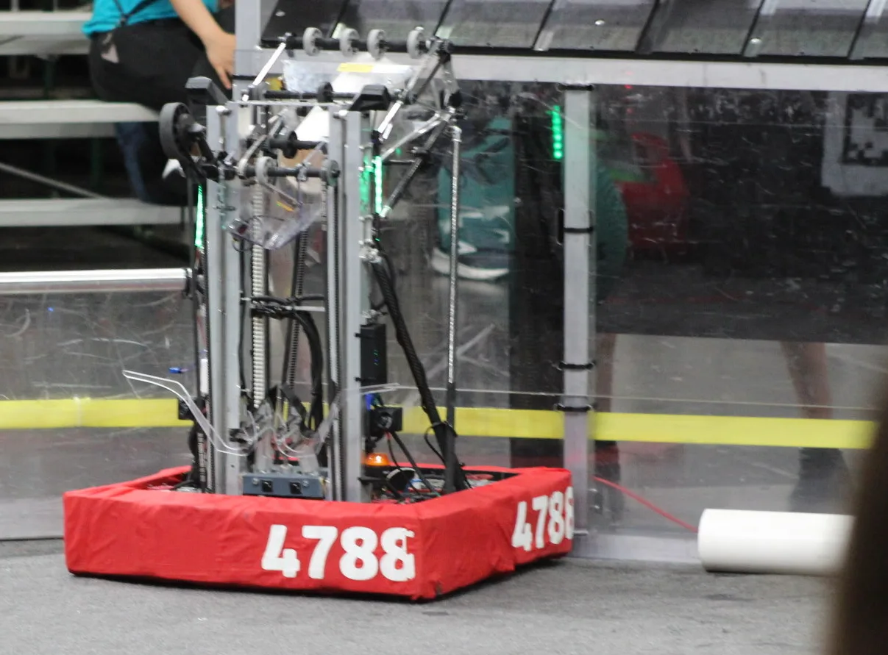
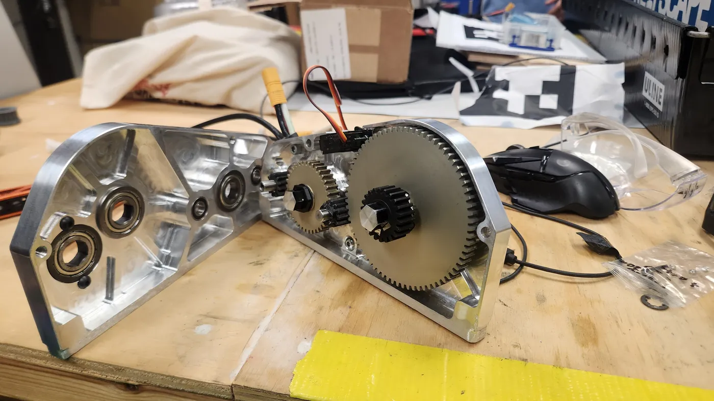
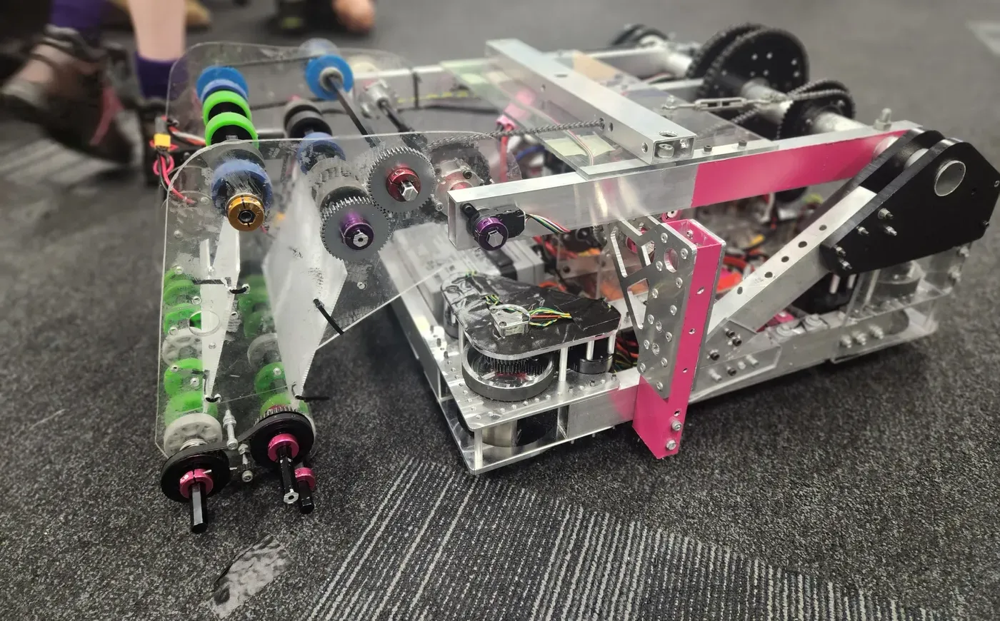
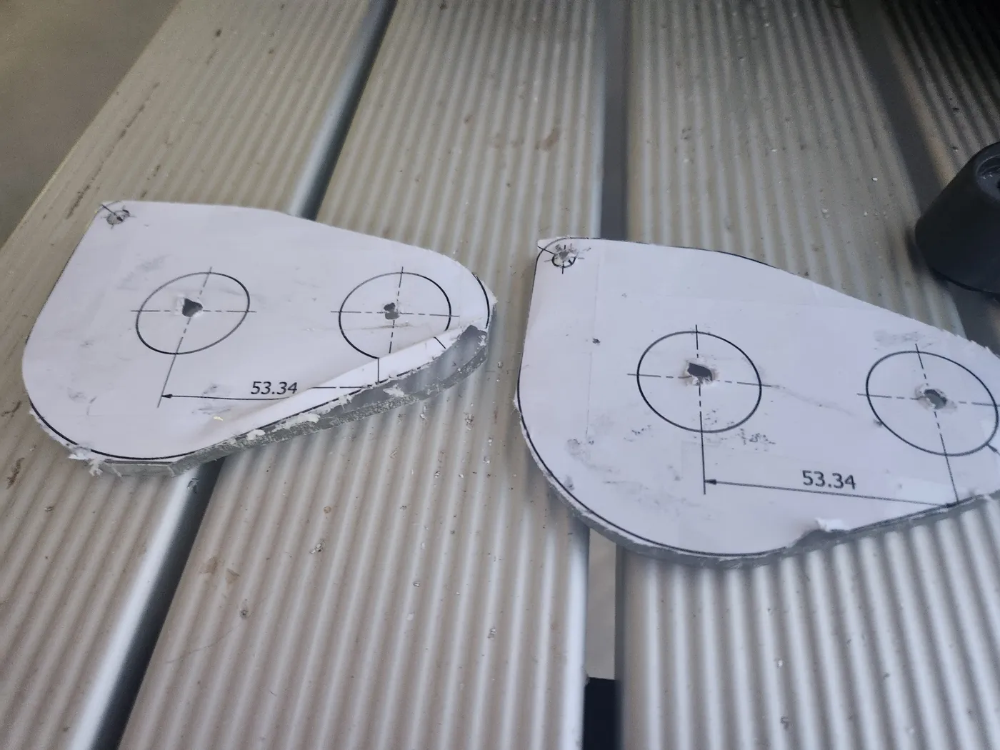

FRC Team 4788
The team
Team 4788, Can't Control, is Curtin University's high school robotics team. It started in 2013 as the first FIRST team in WA, and each year 30+ students from schools around Perth design, build and program a robot of up to 60 kg, then take it to the Southern Cross Regional to compete. If that's all new to you, I've written short explainers on what FRC is and on FIRST, the organisation behind it.
I joined the program in 2016 as a student on Team 5663, Ground Control, one of the two Curtin teams that later merged back into 4788. That team won the South Pacific Regional in 2018, took the Engineering Inspiration Award in 2017 and 2018, and went to the World Championship three years running. I stayed on as a mentor, and I've been lead mentor and administrator of 4788 since 2021 through Curtin STEM Outreach.


What I do
I lead 30+ students and 15+ volunteer mentors through a full design, build and competition season each year. That covers the team's administration, training the mentors, reviewing student designs and robot code, and writing the risk assessments and safe work procedures for a workshop where high school students use power tools.
Most of the friction I see in a team comes from people understanding a problem differently, and more often than not good communication is all it takes to fix it. A lot of the job is making sure students, mentors, parents and the uni are all talking about the same thing.
How I mentor
The students hold the tools and make the calls. The rule I give mentors is two questions before a solution ("What have you tried? What do you reckon the problem is?"), a student who reaches the answer themselves owns it and acts on it. Mistakes they can recover from are allowed to happen.
This year's culture session, "What does our best look like?", has the students write the team's standards while the mentors sit in as scribes. It fails if the mentors solve it for them, and the run sheet says so.
When the Examiner wrote about the team's 2025 trip to Houston, I told them "At the start, some of them didn't even know how to use a drill." Watching that change over a season is why I keep doing it.
What the students have done
These are the team's results, and the students earned them.
- 2021. Ranked first and won the first WARP, WA's offseason competition.
- 2022, Mercury. Engineering Inspiration Award at the Southern Cross Regional.
- 2023, Whiplash. The team's first swerve drive. FIRST Impact Award at the regional, which sent the team to the World Championship in Houston, then a win at WARP.
- 2024, Notedog Millionaire. Excellence in Engineering Award and third place at the regional as an alliance captain, then a win at WARP.
- 2025, Gup X. FIRST Impact Award at the regional again and two Dean's List Finalists, then Archimedes Division Winner and Impact Award Finalist at the World Championship.
- 2026, Glass Cannon. Creativity Award.
The 2024 alpha robot
In January 2024 the team built an alpha robot, a rough first version to test ideas on and to give the drivers and programmers something to work with early. I wrote it up for the team's build blog, failures included.
The arm sat on a 40 mm round tube in place of the usual hex shaft, driven through a 200:1 gearbox, and it could swing through 180° in under a second. At the time we had no CNC router or laser cutter, so the plates were made by printing the drawings at full size, following the outline with a jigsaw, then taping the paper to the part to drill the holes.


Three failures went into the write-up with the fix we planned for each. The plastic plates we used as bushings didn't cope with a shaft that size, so it would get bearings. The polycarbonate gearbox plates flexed enough for the motor to slip out of mesh now and then, so we'd ask a sponsor to make them in aluminium. And the wrist joint had so much slop that nobody could drive it by hand, it would have to be fully automated to be worth keeping.
What I've built for the team
Spring Season 2026. An 18-session program for new students, built around FIRST Tech Challenge because it's a robot they can finish in ten weeks. Four teams of eight (one of them an all-girls team) met on Fridays and Sundays from 13 September, working towards the WA qualifier on 15 November. I wrote the lesson plan, the mentor guide, the parent pack and the risk assessment.
FRC Skills Library. 27 skills that teach AI coding agents how the team writes robot code, covering vision, autonomous paths, tuning and event operations, so a student asking Claude or Codex for help gets an answer that fits our robot. It's public on GitHub.
Training site. In September 2025 I set up learn.team4788.com on top of FRCDesign.org's open course material, started converting it to metric, and laid out a programming course for it. I also wrote a PID visualiser for the course, a page where students drag the gains and watch a simulated mechanism respond, which is in beta.
team4788.com. I moved the team's website off Framer and onto plain templates on GitHub Pages, so the team can maintain it.
The team also runs WARP (the West Australian Robotics Playoffs), WA's offseason competition, at Curtin each August.
Recognition
In 2026 the students nominated me for the Woodie Flowers Finalist Award, FIRST's award for mentors.